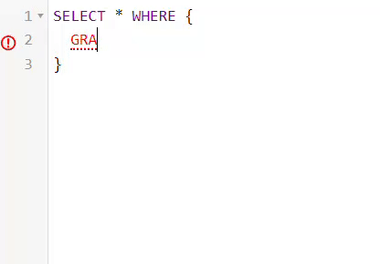

Quads Viz - cross versions
Visualize versioned quads with QuaViz
- Navigate through quads versions with the metagraph.
- Understand the diffs between two versioned graph.
Quads loaDer
QuaDer: import and condense quads datasets
It stores:
- All resources or literals in a catalog.
- Evolving quad datasets in a compressed form using bit vectors to represent the presence of quads across versions.
Quads Query - cross versions · Quads Query - cross versions with inference
Query condensed versioned quads with QuaQue
- It supports SPARQL queries without introducing new operators, maintaining interoperability.
- QuaQue allows querying across multiple versions simultaneously using the condensed quad representation.
- The component uses the condensed representation to improve the execution of join and aggregation queries.
